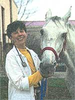
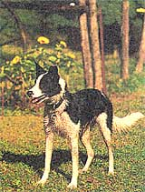

Country Vet
Avoiding hazards when spring finally arrives.
As this issue of MOTHER reaches you, we are all dreaming of shedding those bulky winter boots and climbing out of hibernation. I thought an appropriate way to begin this annual renewal process would be to prepare to examine the homestead and to make some repairs to the of barn door, so to speak. Spring farm repairs will not only improve the look of the property, but are a necessity for the safety of the animals. We're not talking about a total makeover, but the safety and comfort of the animals should be a high priority for every gentleperson farmer.
At the first hint of spring weather, begin by surveying the property. Try to spot areas where pastured or even free-roaming animals might become entangled. Downed brush along the fence may not only create an easy escape route, but may also become a source of poisonous fruit and foliage once blossoming begins. Goats and sheep in particular are good climbers and reachers so be sure to watch out for plants that are slightly higher than the fencing in order to prevent indigestion, toxicity, and entanglement of the animals. Secure any fence boards that may have sprung loose with the rise and fall of the frozen ground. Make sure to pick up old baler twine, lost shoes, hatters, bits of wire or anything that seems even vaguely ingestible.
Fencing should be secure. Try to note areas of untreated lumber on fences and buildings that may over the next few rainy months become friable. Peeling paint should be removed before some unsuspecting mouth chews it off Lead toxicity is a real danger in many barnyards and paddocks. In addition, frayed parts of wood and rubber fencing can cause a serious colic in most horses. In order for the paint to stick well, it's reasonable to wait until the temperature is consistently above 50°F and the humidity is around 50 percent before you start repainting. Remember to dean the areas around the baseboards with a diluted Clorox solution before painting in order to get rid of mildew.
Don't forget to get up on the roof to check the gutters and recaulk old nail holes before the tiny drips that will leak through them threaten everything that's kept in the upper floors of the barn, including your hay. Inside, examine wiring and remove cobwebs. The grain bins should be swept and dusted and made easily accessible to all animals except rodents. Strip the bedding from the stalls and look at the flooring. Lime or wash down hard floors and replace soft flooring if that's a possibility. Check water buckets, feed tubs, door handles, bars, and mangers for sharp edges and places that can easily allow entanglement.
While the list may be long, preparing and repairing now will save you endless headaches in the coming summer and fall. Good luck, and remember, spring is on its way!
As new horse owners, we are getting a lot of advice from different folks as to what bedding should be used for our new Appaloosa. There seems to be a lot of discussion about what's more or less economical and safe. What do you think?
- Regin Chamberlain Miles City, Montana
Some folks say that the best bedding for horses is straw, while others swear by some type of wood shavings. There's also a great deal of interest in discarded newspaper or computer printout paper as of late.
To be honest, both straw and wood shavings have their advantages and disadvantages. Straw is easier to handle because it comes in bales that don't weigh a heck of a lot, and it can be removed with a pitchfork. It is also very comfortable for a ma jority of horses that lay down a lot, seems to cushion well, and provides great insulation, especially if the floor beneath is concrete or dirt. It also tends to absorb urine very easily, but it holds the odor. If you don't intend to clean on a regular (twice a day) basis, this may not be the bedding for you. Also, some animals regard it as a betweenmeals snack, and if eaten in great quantities, it will predispose an animal towards colic. Straw on concrete tends to be a very slippery bedding as well.
Wood shavings, especially fine shavings, also make a comfortable bed, but need to be thickly applied since small amounts don't absorb urine well. Horses won't eat these most of the time, but they do tend to collect on the sole of the foot, causing other problems, especially if the feet are not cleaned daily. Sand or fine dirt has been used as a bedding for horses with laminitis, as a support for their tender frogs, but this really isn't a practical bedding material on a regular basis. Dirt tends to harden quickly and will rapidly accumulate parasites.
These days, many horse owners are experimenting with other bedding materials or combinations thereof. There is a lot of interest in newspaper pellets, shredded newspaper or computer printout paper, pine needles, leaf bedding, or finely crushed peanut shells. Some horse owners use a layer of paper on top of straw, wood shavings, or peanut shells. The advantage of this is that the urine-soaked top layer of paper can easily be lifted off, and the underbedding raked or refreshed.
I would advise you to use straw or wood shavings as a base; the latter is definitely my favorite. Either provides support and comfort, and if you are able to examine your horse for the first few weeks, you'll get a feeling for what he's interested in nibbling on. Providing old plastic jugs tied to the stall door or other playthings for the animal, in addition to frequent feedings, may dissuade him from eating the bedding. What to put on top of the straw or shavings is up to you, but you must be sure to clean frequently as any bedding may become a contaminant- and a threat to the health of the animal-if not properly refreshed.
Our she year old Border Collie recently cut her pad while swimming in the lake, requiring stitches and bandaging. I was noticing on the veterinary bill, however, that they failed to give her a tetanus booster. Our horse has one annually, and I am concerned that "Reba" needs one as well. Whet's the story?.
-J.B. Hanover White Hall, MD
Tetanus is a very dangerous disease for horses, causing convulsions and death in greater than 80 percent of cases. The spores that cause the disease can be present in manure and even in soil that shows no trace of fresh manure, since the organism survives for a long period of time. Horses are quite prone to puncture wounds and tetanus in particular, and as such, all horses need tetanus shots as foals, and periodic boosters, since the effectiveness of the vaccine gradually diminishes over time.
Dogs and cats occasionally develop tetanus, but are more resistant to the disease than large animals. The disease is caused by a bacterium known as Clostridium tetani which gains entrance to the animal via a deep penetrating wound. The bacterium forms a spore, or resistant form of itself, and then produces toxins. The toxin that it secretes attaches to specific nerves known as interneurons and prevents their control of other nerves. Animals that get the disease are unable to control their muscle movements, often becoming tetanic, or spastic, even paralyzed. Most signs appear within a week after the wound becomes infected.
Fortunately, most of the time the bacteria are very susceptible to antibiotics, in particular penicillin and its derivatives. Most small animals are prescribed antibiotics for lacerations and if given early enough, the bacteria will be hindered and unable to produce their deadly toxin.
However, in the rare event that a dog or cat contracts tetanus, an antitoxin can be given, along with a tetanus toxoid, in order to provoke the animal's immune system into battling the toxin itself.
Is chocolate really toxic to pets? Our cat loves a bit now and than. Is it all right togive this to her or is it truly a poison?
-Martha Hernandez Tyler, TX
Like many things, if ingested in small amounts and not too often, chocolate is probably not a toxin or poison to pets. However, caffeine, chocolate-bakers chocolate is the worst!-tea leaves, and coffee beans all contain a substance known as xanthine. Xanthine attaches to receptors all over the body, causing increased heart rate, muscle contractions, excitability, and urination. If ingested in great amounts, it can cause seizures and possibly even death.
A treat of candy once a week will probably not cause too much of a problem. But you should hide the bag just in case someone's appetite gets finely tuned.
I have recently read about feeding tetracycline to dairy cows to help cure hairywarts. Have you heard of this and how much should we be adding to our feed? Would a zinc footbath work as well?
-Brenda Hooper Meadville, PA
Digital dermatitis is known by many names, among them hairy warts and Mortellaro's disease. This disease affects mostly the hind or heel surface on the hind feet of dairy cattle, and can first appear as haired heel surfaces which appear to stand on end and which eventually develop wart-like growths. The cause of these lesions hasn't been fully established but several types of spirochetes (spiral bacteria) have been isolated from the affected areas along with a multitude of other organisms known to cause foul smelling feet.
Oxytetracycline and tetracycline hydrochloride have been used topically as a spray, poultice, footbath, under a bandage, and has been injected intramuscularly as a treatment. Oral use may also be effective, especially in heifers, but the amount necessary to achieve good blood levels maybe high. Oftentimes, indigestion is a sequela. Low levels of tetracycline have been used successfully in feed for appetite improvement and to control various enteric and respiratory diseases. However, I would suggest use of 0.1% oxytetracycline in a footbath (poultry oxytetracycline for addition to water is probably cheapest) as opposed to putting it in the feed.
Zinc sulfate footbaths have been used for many years for foot rot in sheep. A ten percent solution is recommended. This condition in sheep, however, is caused by two bacteria known as Fusobacterium necrophorum and Fusiform nodosus, which are known to be sensitive to icthamol, copper naphthalate, Formalin, and copper sulfate, along with zinc sulfate. Hairy warts in cattle are quite distinct from this disease in sheep so the efficacy of the zinc sulfate is unknown for the condition in cattle.
Write us at "Country Vet" c/o Mother Earth News, P.O. Box 129, Arden, NC 28704 or via e-mail at MEarthNews@aoL.com. Please include a photo, your town and state, and your phone number so that we can tell you when your letter will appear.
|
 |
 |
|